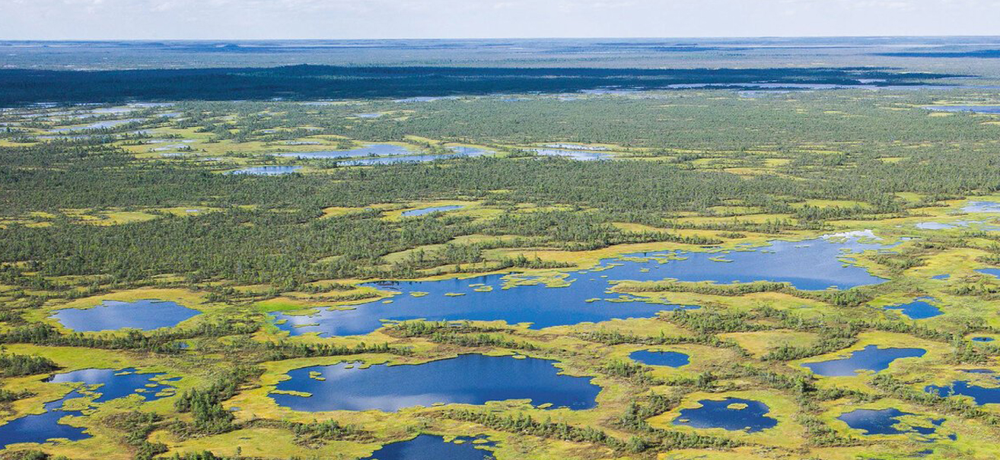
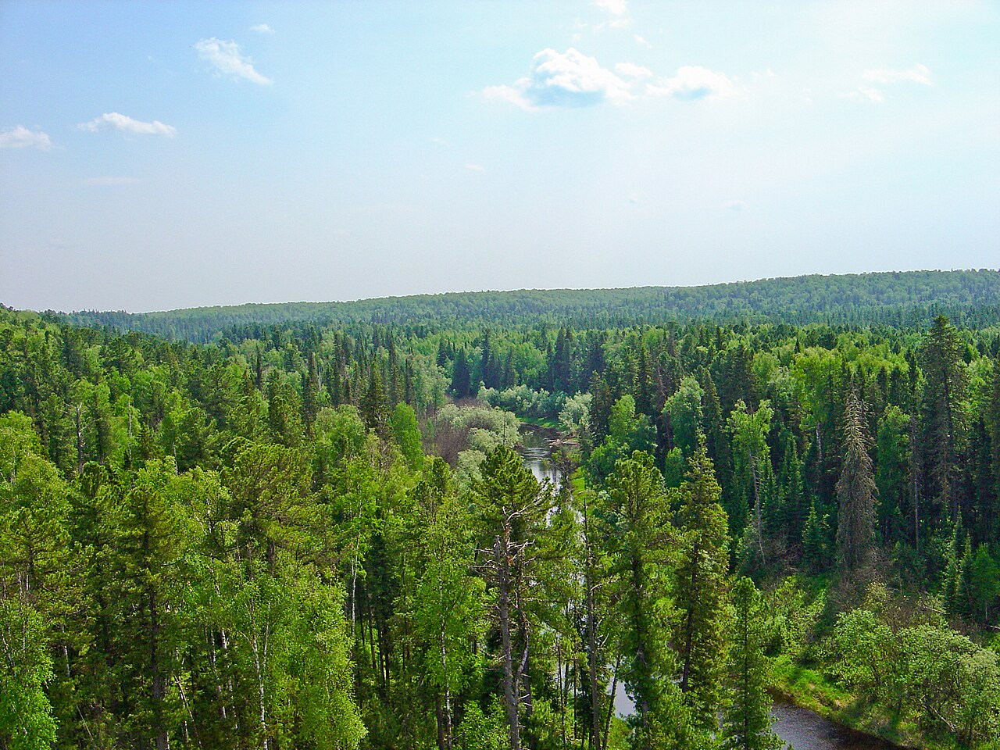
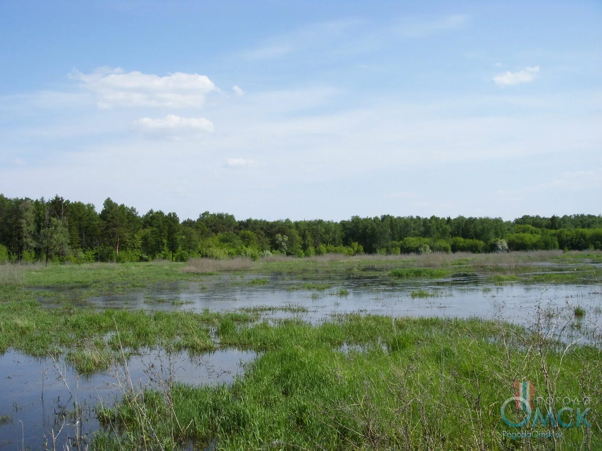
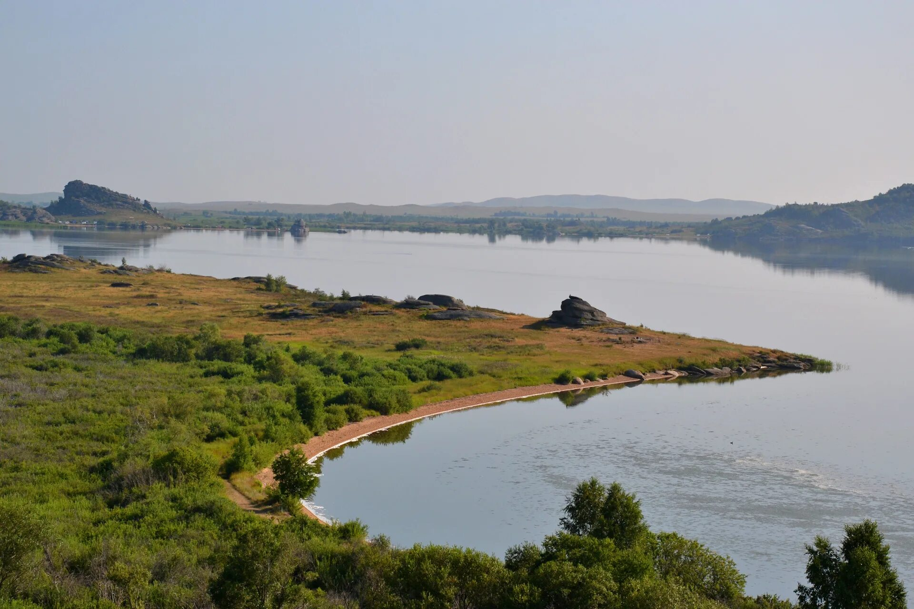

Крупнейшая болотная система Северного полушария (53 тыс. км²). Одни из крупнейших болотных систем в мире, расположенная в Западной Сибири, в междуречье Оби и Иртыша. Включены в предварительный список ЮНЕСКО.
Заповедный статус: федеральный статус заповедника
Особо охраняемая территория в Сургутском районе Ханты-Мансийского автономного округа, в бассейне реки Большой Юган (левый приток Оби).
Охранный статус: Заповедник федерального значения
Уникальные заливные луга, место остановки перелётных птиц. Часть речной системы, где протекает река Иртыш на территории Омской области.
Государственный природный ландшафтный заказник регионального значения «Пойма Любинская».
Туристический район в юго-западной части Алтайского края, расположенный в низкогорном массиве Колыванского хребта.
Памятник природыГлавное событие года. Реки просыпаются, начинается мощный и часто разрушительный ледоход с заторами льда. Снеговое питание вызывает бурное и продолжительное весенне-летнее половодье.
Период спада воды. Уровень постепенно понижается, наступает летняя межень (самый низкий уровень), которая, однако, может нарушаться дождевыми паводками, особенно на Оби
Время перемен. Продолжается спад воды. Для Оби характерны сильные дождевые паводки в сентябре-октябре
Период глубокого покоя. Реки скованы толстым льдом от 150 до 220 дней в году, но жизнь под ним не замирает. Зимняя межень — самый низкий уровень воды в году